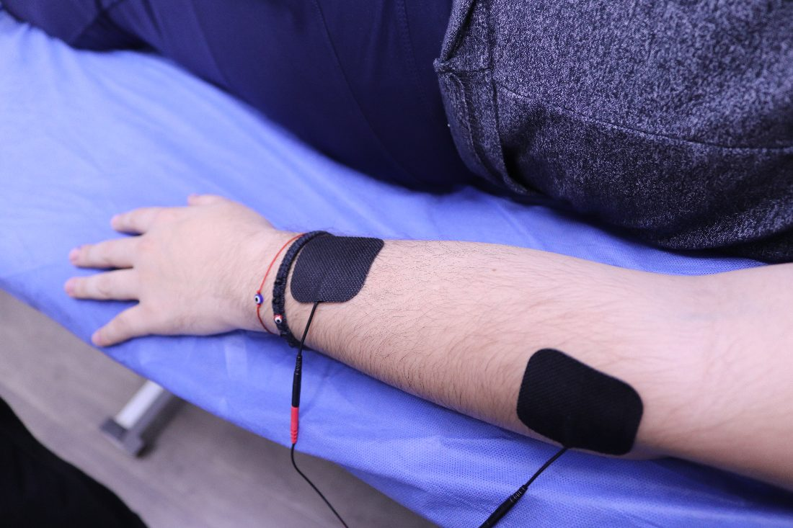
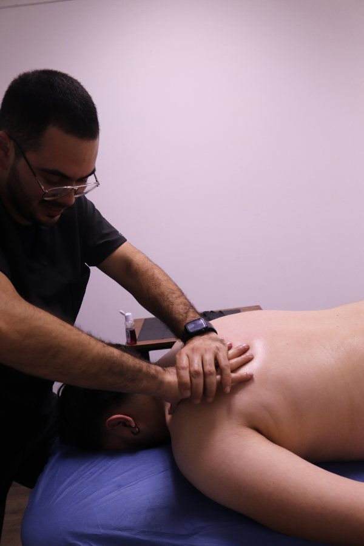

Evaluar con criterio
El plan empieza entendiendo qué patrón, tejido, carga o limitación sí importa en tu caso.
Performance Rehabilitation · Zona Río, Tijuana
PhysioPro es rehabilitación de rendimiento para personas activas, atletas y pacientes que quieren algo más serio que reposo indefinido, protocolos genéricos o alivio temporal.

1 · Rest Was Never A Plan
A muchos pacientes ya les dijeron que descansen, que eviten movimiento, que bajen carga o que acepten una versión más limitada de su vida física. A veces eso tiene una función puntual. Pero no siempre es una estrategia completa de recuperación.
PhysioPro no está contra la medicina ni contra el juicio clínico. Está contra la idea de terminar el proceso justo cuando baja el dolor, sin reconstruir capacidad, confianza y retorno.
2 · Movement Is Medicine
El plan empieza entendiendo qué patrón, tejido, carga o limitación sí importa en tu caso.
No todo dolor necesita más reposo. Muchas veces necesita dirección, control y dosificación.
La meta no es solo sentir menos. Es moverte, cargar, trabajar o entrenar con más confianza.
3 · From Pain To Performance
Movimiento, dolor, historial y objetivo. La primera sesión define el mapa.
Tratamiento según lo que encontramos, no una rutina genérica repetida para todos.
Rango, control, fuerza y tolerancia de carga vuelven con estructura, no por azar.
Trabajo, vida diaria, deporte o entrenamiento con criterios más altos que solo “ya no duele”.

4 · Meet Leonardo
“Salir del dolor importa. Pero el trabajo completo es ayudarte a volver a cargar, moverte y confiar otra vez en tu cuerpo.”
PhysioPro está construido alrededor de una idea simple: rehabilitación seria requiere evaluación clara, progresión estructurada y criterio clínico suficiente para llevar al paciente más allá del alivio inicial.
5 · What You Want Back
6 · Proof / Results
Esta vista previa V3 no publica resultados inventados, testimonios falsos ni casos de ejemplo. Los activos de prueba de PhysioPro se integrarán cuando existan casos autorizados, verificables y aptos para uso público.
Estado actual: proof assets pending internally.7 · Inside PhysioPro



8 · Before You Decide
Sí. La primera sesión incluye evaluación clínica, tratamiento inicial y una ruta clara de siguientes pasos.
Puede ser parte de una fase, pero no siempre debe ser el final del proceso. Aquí buscamos cuándo y cómo volver mejor.
Sí. El enfoque cambia según el caso, pero siempre apunta a función, capacidad y confianza.
Depende de tu condición, historial y objetivo. Después de la primera sesión te damos una estimación honesta.
9 · Location
José María Velazco 2632, Zona Urbana Río Tijuana, 22010 Tijuana, B.C.
Lun–Vie · 8:00 – 20:00
Primera sesión · $750 MXN con valoración + tratamiento.

10 · Final CTA
La ruta principal de PhysioPro sigue siendo directa: agenda por WhatsApp, comparte tu caso y coordinamos tu primera evaluación.
Agenda por WhatsApp11 · Lead Capture
El formulario conserva el mismo comportamiento de producción: al enviarlo, se abre WhatsApp con tu información para coordinar la primera sesión.